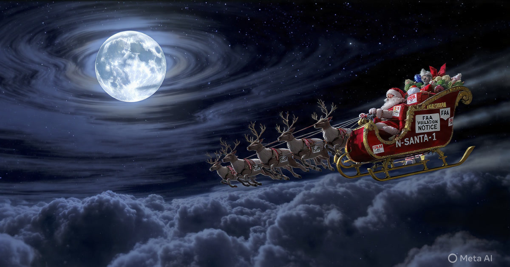

Vol. I · March 2026

Aviation Law & Regulatory Compliance
14 CFR Part 107 defines a commercial drone operator as anyone who flies an unmanned aircraft for compensation or hire. NORAD officially confirms the sleigh is airborne. No FAA certificate has ever been issued to a North Pole address. The penalty exposure is $22.5 trillion.
By Daniel Haverford · March 31, 2026 · 11 min read
Labor Economics & Comparative Zoology
Bureau of Labor Statistics productivity data, combined with peer-reviewed research on feline hunting efficiency and sleep architecture, produces an uncomfortable comparison. Cats are 27 to 43 times more cost-effective per productive hour.
By Miriam Osei-Bonsu · March 31, 2026 · 13 min read
Sports Science & Public Health Policy
Marathon running injures the majority of training participants and produces cardiac events in approximately 1 per 100,000 finishers. Napping outperforms on every health metric the Olympic movement claims to value.
By Thomas Reinhardt · March 31, 2026 · 14 min read
Infrastructure & National Security
Federal law defines critical infrastructure as systems "so vital to the United States that the incapacity or destruction of such systems would have a debilitating impact on security, national economic security, or public health." By the government's own data, squirrels qualify.
By Catherine Aldworth · March 30, 2026 · 12 min read
Monetary Policy
An actuarial analysis of leadership selection criteria, public approval optimization, and cognitive behavioral research suggests the optimal candidate may not be human.
By James Okonjo · March 30, 2026
Agricultural Policy
The legal definition of "farm" under federal agricultural census guidelines contains no requirement that the operation be located on Earth. Recent NASA experiments may have inadvertently triggered eligibility.
By Priya Sundaram · March 30, 2026